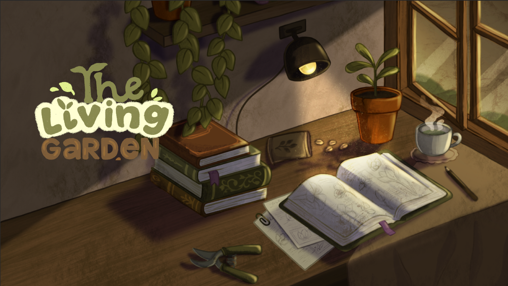
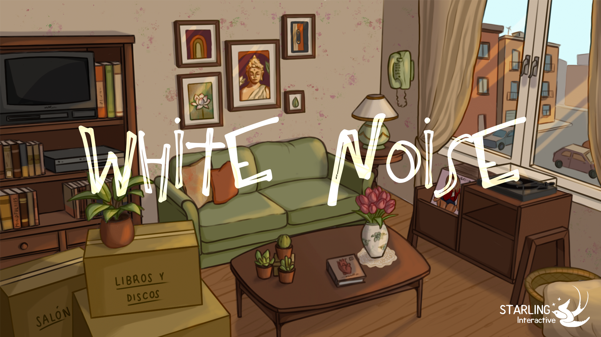
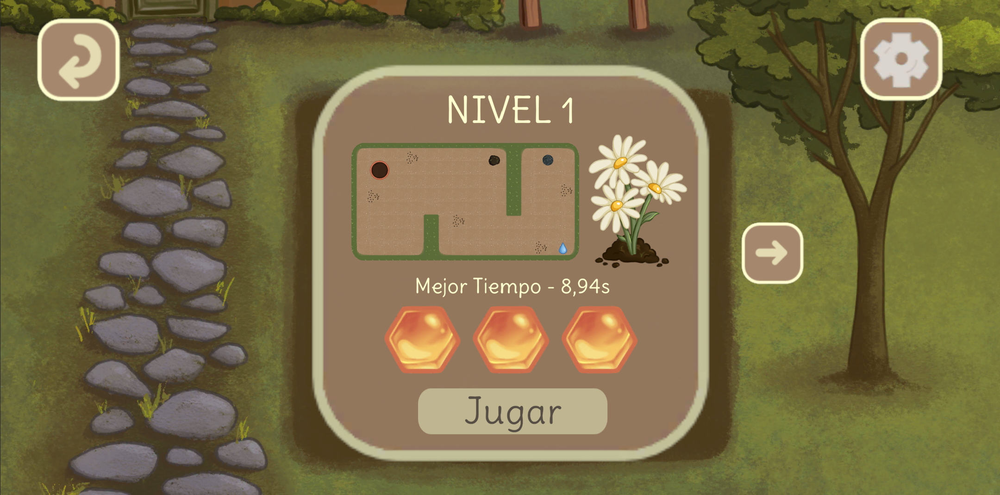

Hola, soy Laura
Gameplay Programmer & Technical Designer Junior
Soy estudiante de último curso de Diseño y Desarrollo de Videojuegos (URJC) con un perfil híbrido enfocado en la programación de gameplay. Combino la escritura de código limpio y escalable en Unity (C#) con una fuerte sensibilidad por el diseño de sistemas. Mi mayor fortaleza es actuar como puente entre el diseño y la ingeniería: me apasiona programar mecánicas, prototipar de forma ágil e implementar arquitecturas complejas sin perder el foco la experiencia del jugador.
Ver mis proyectosHabilidades Técnicas
Programming & Engines
- • Lenguajes: C# · C++ · JavaScript
- • Motores: Unity
- • Tools: Visual Studio · GitHub
Gameplay Systems & Technical Design
- • Diseño e implementación de mecánicas de juego
- • Prototipado rápido de sistemas y gameplay
- • Sistemas data-driven
- • Arquitectura de código limpia (patrones de diseño, SOLID, desacoplamiento)
IA & Sistemas Avanzados
- • Pathfinding (A*)
- • Comportamientos de IA (State Machines, Behavior Trees)
- • Reinforcement Learning básico (Q-Learning)
Audio
- • Diseño de Sonido e implementación de audio en Unity
- • Creación e integración de música original
Metodologías
- • Trabajo en equipo con Scrum y metodologías ágiles
- • Control de versiones y colaboración (Git)
Mis Proyectos

The Living Garden
Lead Programmer & Game DesignerSimulación de jardín y gestión de recursos con clima dinámico, plagas y economía vegetal.

White Noise
Programmer, Game Designer & Sound DesignerAventura narrativa point-and-click.

The Garden Labyrinth
ProgrammerJuego de laberintos para dispositivos móviles centrado en físicas (Giroscopio).